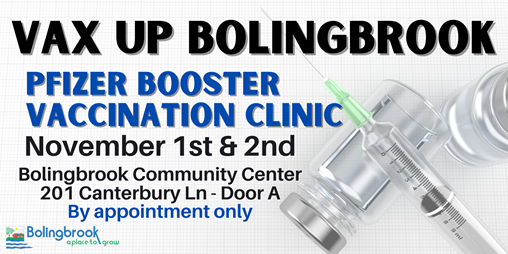

1 / 3

Caption Text
2 / 3

Caption Two
The Bolingbrook Arts Commission assists the Mayor and Board of Trustees in the development and implementation of projects that enhance the artistic and cultural aesthetics of the Village of Bolingbrook. Since its inception, the Arts Commission has provided opportunities for local artists and arts organizations to showcase their work in an effort to create a culture that embraces and financially supports working artists and artist groups. Past initiatives include pop up galleries, public art displays, live concerts, training programs, and accessible community art projects.
The Bolingbrook Arts Commission assists the Mayor and Board of Trustees in the development and implementation of projects that enhance the artistic and cultural aesthetics of the Village of Bolingbrook. Since its inception, the Arts Commission has provided opportunities for local artists and arts organizations to showcase their work in an effort to create a culture that embraces and financially supports working artists and artist groups. Past initiatives include pop up galleries, public art displays, live concerts, training programs, and accessible community art projects.